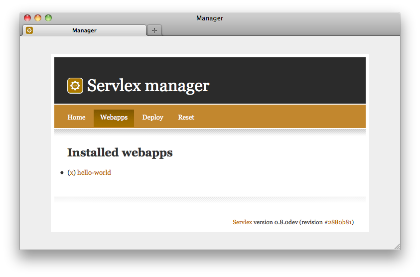

Installation Guide
Servlex can be installed either using a graphical installer, or by deploying the standalone WAR file in the servlet container of your choice. The former approach is indeed the easiest one, whilst the latter is the most flexible.
Installer
This method requires you to download a file, execute it, choose the directory where to install Servlex, and that is pretty much it! It comes with Tomcat pre-bundeled, so you do not have to worry about scarry details. The only pre-requisite is to have Java installed, with JAVA_HOME properly set. Please follow those instructions if you do not have Java yet (choose the latest JDK for your platform).
Download the latest installer from the download area,
and execute it. You can simply double-click on it, or from the command-line
just execute: java -jar servlex-x.y.z-installer.jar. Follow the
instructions, that's it! If you have a graphical interface (like on most
desktops and laptops), it will use friendly dialog boxes, and if you do not
(like on most distant servers) it will use a textual interface.

At this point, you might want to have a look at the available
configuration options before starting Servlex, for
instance if you want to change the port Servlex listen to (by default it is
19757).
To start Servlex, just execute bin/startup.sh (resp.
bin/startup.bat on Windows) and go to
http://localhost:19757/.
WAR file
If you want to install Servlex into the servlet container of your choice, download the latest ZIP file from the download area. It contains a suitable WAR file and installation instructions. Once installed in your servlet container, you might want to have a look at the available configuration options as well.
If you install the WAR file, you will have to set up the repository for web applications. You will have to install the webapp manager as well, if you need it (by using the REST API or the command line tools). For reference, here is what the build process exactly does with the WAR file to bundle it with Tomcat, in order to create the installer:
- mkdir [tomcat]/repo
- mkdir [tomcat]/repo/.expath-web
- mkdir [tomcat]/profiling
- create the file [tomcat]/repo/.expath-web/webapps.xml, with the content detailed below
- install latest webapp-manager-x.y.z.xaw
- install latest expath-http-client-saxon-x.y.z.xaw (the manager depends on it)
- install latest expath-zip-saxon-x.y.z.xaw (the manager depends on it)
- add some properties to [tomcat]/conf/catalina.properties
The content of the webapps.xml file is:
<webapps xmlns="http://expath.org/ns/webapp">
<!--
Contains elements like:
<webapp root="myapp" enabled="true">
<package name="http://example.org/my/webapp"/>
</webapp>
-->
<webapp root="manager">
<package name="http://servlex.net/app/manager"/>
</webapp>
</webapps>
The properties added to the Tomcat configuration file are as following. Most of them are commented out, but they serve as a reference for what properties exist.
# Added by Servlex bundler for Tomcat
#
# The processors implementation class to use
org.expath.servlex.processors=org.expath.servlex.processors.saxon.SaxonCalabash
# The location of the repository
org.expath.servlex.repo.dir=${INSTALL_PATH}/repo
# Uncomment to have Calabash generating profiling data
# org.expath.servlex.profile.dir=${INSTALL_PATH}/profiling
# Uncomment to log (in trace level) the actual content of requests/responses
# org.expath.servlex.trace.content=true
# Uncomment to set the default charset of requests (if not set in a request)
# org.expath.servlex.default.charset=UTF-8
Try it
Once installed, you can access the Servlex Admin Console at http://localhost:19757/manager/home. The Console let you manage the webapps in a Servlex instance, by listing them, removing them, deploying a webapp from a XAW file, or directly from CXAN.

If you are eager to test Servlex, you can deploy the sample web application
available in the installation dir, as hello-world-0.9-0.xaw. Go
to the Console, to the "Deploy" tab, fill in the form by choosing the
file and press deploy. Check the abstract you get on the next page
looks OK, keep the default context root suggested, and press deploy
again. You can now access the example application by visiting
http://localhost:19757/hello-world/.
The sources are available in the dir hello-world/ in the installation dir.
This sample application is just a few forms, each one-field, sending a string to either an XSLT function, an XQuery function or an XProc step, which in turn responds with a page based on this parameter. You can use the dump tool provided by H2O Consulting to display the XML representation of the HTTP request which is sent to the XSLT, XQuery and/or XProc components in a web application.